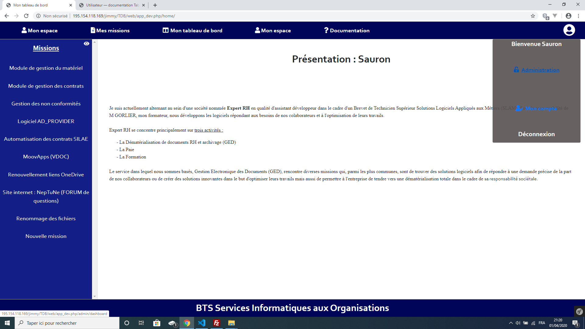
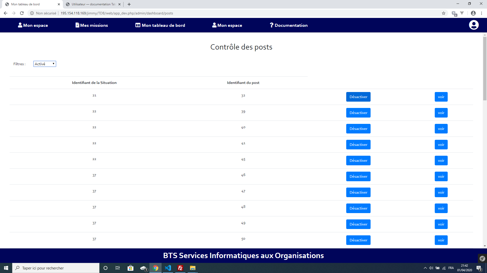
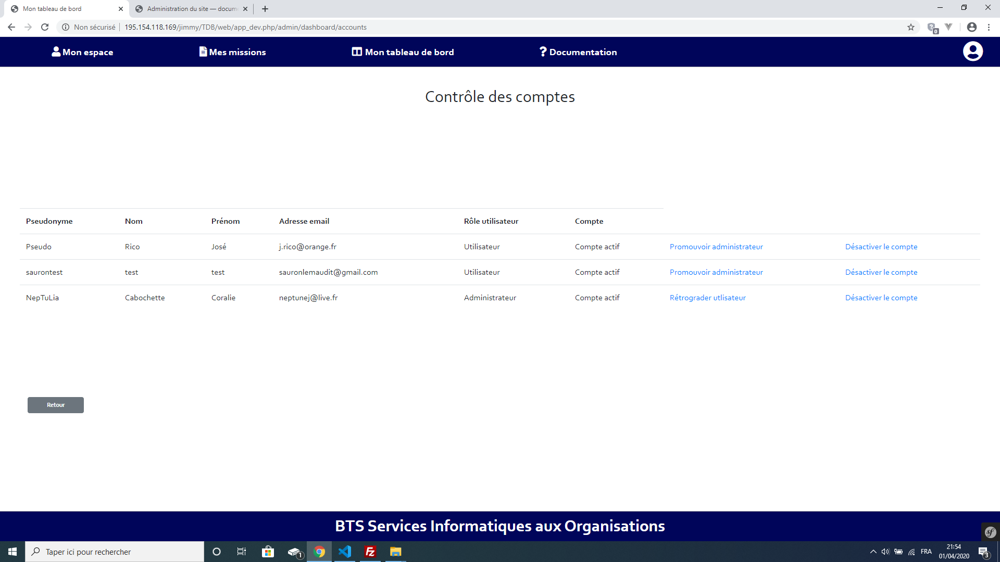

Administration du site¶
Accueil¶
L’Administration du site est accessible, si l’utilisateur dispose du rôle administrateur, dans la fenêtre qui permet d’accéder à l’espace “Mon compte”. Cette fenêtre est accessible en cliquant sur l’image en haut à droite de l’écran dans le bandeau de navigation principal.
Une fois l’option “Administration” sélectionner une nouvelle fenêtre apparaît. Celle-ci vous permet d’accéder aux
- Contrôle des éléments postés
- Contrôle des utilisateurs
- Contrôle des compétences obligatoires
- Contrôle des compétences
- Contrôle des sauvegardes
Contrôle des éléments postés¶
Le contrôle des éléments postés permet de visualiser, activer ou désactiver une situation postée par un utilisateur.
Contrôle des comptes¶
Le contrôle des comptes utilisateur permet de modifier le rôle d’un utilisateur (utilisateur ou administrateur), d’activer ou désactiver son compte.
Note
L’administrateur n’ayant pas la possibilité de modifier son rôle ni de désactiver/activer son compte, il ne verra pas apparaître son compte dans la liste.
Contrôle des compétences obligatoires¶
Cette page permet de créer les compétences obligatoires.
Note
Se référer au référentiel de Brevet de Technicien Supérieur Services Informatiques aux Organisation pour obtenir la liste des compétences obligatoires.
Contrôle des compétences¶
Cette page permet de créer les compétences.
Note
Se référer au référentiel de Brevet de Technicien Supérieur Services Informatiques aux Organisation pour obtenir la liste des compétences.
Contrôle des sauvegardes¶
Le contrôle des sauvegardes permet de créer des sauvegardes du site . Ces sauvegardes permettent d’effectuer une restauration du site. Sélectionner une sauvegarde à restaurer et cliquez sur le bouton “restaurer”.
Note
Lorsqu’une sauvegarde est créée, la base de données est enregistrée ainsi que les images associées aux sites au moment de la sauvegarde. Cette sauvegarde restaurera le site dans son intégralité (images incluses).
Avertissement
Les sauvegardes doivent être effectuées à intervalle régulier. L’administrateur en charge des sauvegardes se doit de créer un point de restauration avant toute suppression d’un univers, d’un thème ou d’une section.